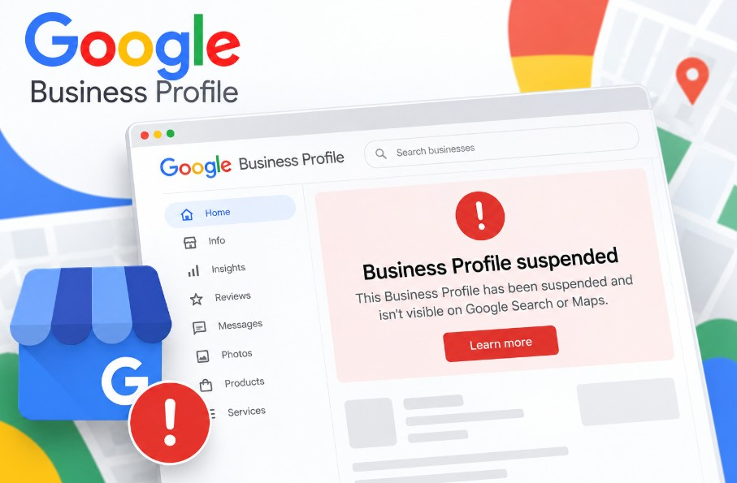

You open your dashboard and see the line every owner dreads: "Your Business Profile is suspended." The calls have stopped, and your shop seems to have vanished from Google Maps. Take a breath. Most suspensions can be fixed.
A suspension means Google Business Profile (formerly Google My Business) has spotted something on your listing that it thinks breaks its rules. Having your Google Business Profile suspended isn't a lifetime ban. Older forum threads call it a Google My Business suspended listing, but the fix is the same.
Before you touch anything: don't delete the profile and don't create a new one. Both moves make recovery harder.
What Does "Suspended" Mean on Google Business Profile?
A suspended Google Business Profile is a listing Google has restricted because it believes the profile breaks its policies. Depending on the type, you either lose control of the profile or it disappears from Google Maps and Google Search until an appeal succeeds.
Consultants group suspensions into three types, though Google doesn't use these exact labels.
Soft suspension: the profile is visible but you can't manage it
A soft suspension is when your profile still shows on Google Maps and Search, but you can't edit it or reply to reviews.
Hard suspension: the profile is removed from Maps and Search
A hard suspension is when Google removes the profile from Google Maps and Google Search entirely, usually because it doubts the business is real.
Account restriction: every profile on the Google Account is affected
An account restriction is when Google limits the Google Account itself, so every profile it owns or manages is affected. This Google My Business suspended account situation needs its own appeal.
How to Check If Your Profile Is Suspended
You can confirm a suspension in three places.
- Business Profile Manager: a suspended profile shows a notice at the top when you sign in.
- Google Maps: search your exact business name in a private window. If it's missing, you may have a hard suspension.
- Business Profile appeals tool: it lists every moderation decision and its appeal status.
Not suspended but still missing? Read about other reasons your business isn't showing on Google Maps.
Why Is My Google Business Profile Suspended? 8 Common Reasons
"Why is my Google My Business suspended?" Nearly always, it's a clash with the Google Business Profile guidelines. Google's guidelines for representing your business set the rules, and these eight breaches cause most suspensions:
- Keywords added to the business name
- A virtual office, PO box or coworking address
- A home address shown for a service-area business
- No permanent signage or staffed location
- Duplicate profiles for the same business
- A wrong or misleading category
- Many big edits at once, or a change of address
- Deceptive content or fake reviews
Keywords in the name. Calling your listing "Best Dental Clinic Thrissur" when the signboard says "Smile Dental Care" is keyword stuffing.
Virtual office or coworking address. A hot desk in a Kochi coworking space doesn't qualify unless it's staffed during business hours.
Home address on a service-area business. An electrician working from home should hide the address and list service areas, or risk being suspended for quality issues.
No signage or staff. Google expects permanent signage and someone present during listed hours. A temporary flex banner rarely convinces a reviewer.
Duplicate profiles. A second listing, often made by an ex-employee or old agency, can put both at risk.
Wrong category. Choosing "Hospital" for a two-doctor clinic looks misleading.
Big edits or a new address. I see many profiles suspended after changing address when the new location has no proof yet.
Deceptive content or fake reviews. Buying reviews or rewarding five-star ratings breaks the Prohibited and restricted content policy. Profiles suspended for deceptive content are, in my experience, the hardest to recover.
Google Business Profile Suspended for No Reason?
Suspensions rarely happen without a cause, even when the appeals tool doesn't name one. Owners often post "GMB suspended for no reason" in the Google Business Profile Help Community, but an audit usually finds it.
If your profile was simply suspended due to policy violation, check the name, address, category, signage, duplicates, recent edits and reviews. Ask whether anyone with access changed something.
Pro tip: Search Google Maps for your phone number. It often reveals a duplicate listing you never knew existed.
Google My Business Suspended? What to Do (and Not Do) in the First 24 Hours
In the first 24 hours, record everything and change nothing. Rushed edits are how I see simple cases turn into long ones.
Do:
- Screenshot the suspension notice and the appeals tool page.
- Read the policy that Google links to in the notice.
- Note your Business Profile ID (under Advanced settings).
Don't:
- Delete the profile.
- Create a new profile for the same business.
- Make several quick edits.
- File several appeals for the same decision.
How to Fix a Suspended Google Business Profile, Step by Step
To fix a suspended profile, find the reason, correct it, collect matching proof, submit one appeal and wait.
Step 1: Find the reason in the appeals tool
Open the Business Profile appeals tool with the owner's Google Account. It shows the moderation decision, the policy involved and whether you can appeal.
Step 2: Fix the violation before you appeal
Reviewers judge the profile as it stands. Remove keywords from the name, hide a home address, change the category or report a duplicate. If the dashboard is locked, describe the fix in your appeal instead.
Step 3: Gather evidence that matches your profile exactly
Google accepts proof such as a business registration, licence, tax certificate or utility bill, plus photos or a video of the premises. Names and addresses must match the profile.
Pro tip: Record one continuous video from the street, past the signboard and through the entrance to staff at work.
Step 4: Submit one appeal
Upload your files through the Google Business Profile reinstatement form inside the appeals tool, then add a short, factual note. One clear Google Business Profile reinstatement request beats five emotional ones.
"[Business Name] operates from [full address] with permanent signage and staff present during [business hours]. We have removed 'Best' from the profile name so it matches our signboard and GST registration exactly. Our GST certificate, KSEB electricity bill and a video of the signboard and entrance are attached."
Step 5: Track the status and wait
The appeals tool shows your status as Submitted, Approved, Not approved or Can't be appealed. Don't edit the profile or appeal again while it's under review.
A real case [EDIT: confirm real case details]: a Thrissur dental clinic was suspended after a relative added "Best" to its name. We restored the real name, sent the GST certificate, clinic registration and a signboard photo in one appeal, and it was approved in [X] days.
Which Documents Work as Evidence for Indian Businesses?
Indian businesses can use GST, Udyam, Shop and Establishment, trade licence and utility documents as evidence, provided they match the profile.
| Google evidence type | Indian/Kerala documents that fit |
|---|---|
| Business registration | GST registration certificate, Udyam (MSME) registration, Shop and Establishment registration under the Kerala Shops and Commercial Establishments Act |
| Business licence | Panchayat or municipality trade licence (D&O licence), FSSAI licence, clinic or professional registration |
| Tax certificate | GST registration certificate |
| Utility bill | KSEB electricity bill, BSNL or broadband bill |
The name and address on your documents must match the profile character for character.
Pro tip: If the KSEB bill is in your landlord's name, pair it with a trade licence or GST certificate showing your business at that address.
What If Your Google Business Profile Appeal Is Denied?
A denied appeal isn't always the end, but your next attempt must bring something new.
- Re-read the policy linked in the decision.
- Compare your profile with every document, checking spelling, door number and PIN code.
- Request an additional review with new evidence.
- Never re-submit the same argument with the same files.
How Long Does Reinstatement Take?
Google Business Profile reinstatement usually takes days, but nobody can promise a date. Google's help pages say most appeal reviews finish within about 5 business days.
A Google Business Profile appeal delay usually comes from missing or mismatched evidence. Once reinstated, reviews normally return, though rankings may take a while to settle. Google sometimes asks you to re-verify your Google Business Profile at this stage.
How to Avoid Another Suspension
You avoid another suspension by keeping the profile accurate and changing it slowly.
- Use your real business name, exactly as it appears on the signboard.
- Keep NAP (name, address, phone) consistent across your website, Justdial, Facebook and the profile.
- Make edits one at a time, a few days apart.
- Keep owner and manager access clean, and remove ex-staff and old agencies.
- Ask every customer for a review, but never pay or reward anyone for one.
My local SEO services in Kerala include regular profile health checks.
Frequently Asked Questions
Yes. Most suspended profiles can be reinstated once the owner fixes the violation and proves the business is real with matching documents. Profiles that were fully removed, or that Google marks as not appealable, are much harder to recover.
Most Google Business Profile appeals are decided within about 5 business days, though some take longer. Delays usually come from unclear or mismatched evidence, so a complete first submission is the fastest route.
No, not usually. During a hard suspension your reviews are hidden along with the profile, and they normally return once Google reinstates it. There's no guarantee, and reviews that break Google's policies may be removed.
No. Creating a new profile for the same business counts as a duplicate listing and can lead to an account restriction affecting every profile you manage. Appeal the original profile instead, even if it takes longer.
No, not unless it's staffed during your stated business hours. A virtual office, PO box or unstaffed coworking desk can't be a business address. If you serve customers at their location, set up a service-area profile instead.
An address change triggers a fresh review, and Google may suspend the profile if it can't confirm the new location. Prove it with a utility bill showing your business name and a photo of your new signage.
Need Help With a Suspended Profile?
A Google Business Profile suspended notice is stressful, but it's usually a fixable mismatch with Google's rules. Find the reason, fix it, prove it with matching documents and appeal once.
I help businesses in Thrissur and across Kerala get suspended profiles reinstated and keep them safe. Looking for an SEO expert in Thrissur to handle yours?